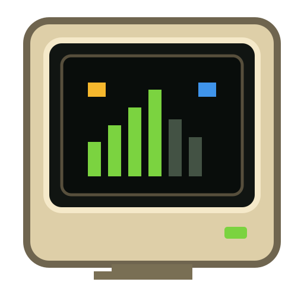

Multiple accounts
Keep personal and work Codex sessions separate with isolated account homes.
OPEN SOURCE · NATIVE macOS
AI subscriptions are hard to track across accounts and services. AI Monitor puts limits, resets, and credits in one tiny retro menu bar popup.
Requires macOS 14+. Signed releases will appear on GitHub; until then, build from source.
THE USEFUL PART
Keep personal and work Codex sessions separate with isolated account homes.
See percentages and reset times without turning raw timestamps into mental math.
Small and medium widgets read only a minimal shared snapshot and never start providers.
A typed interface keeps future integrations honest and makes missing capabilities explicit.
CRT character without tiny targets: keyboard navigation, labels, contrast, and reduced motion.
Export useful troubleshooting context while masking emails, home paths, and secret-like values.
PROVIDER STATUS
PRIVACY
AI Monitor talks to local provider tooling or explicitly configured endpoints. It does not ship analytics, ads, or a hosted account proxy. Credentials remain under provider control or in Keychain.
Read the privacy policy →analytics = false
ads = false
hosted backend = false
web scraping = false
local snapshot = minimal
Follow development, audit the code, or help build the next honest provider.